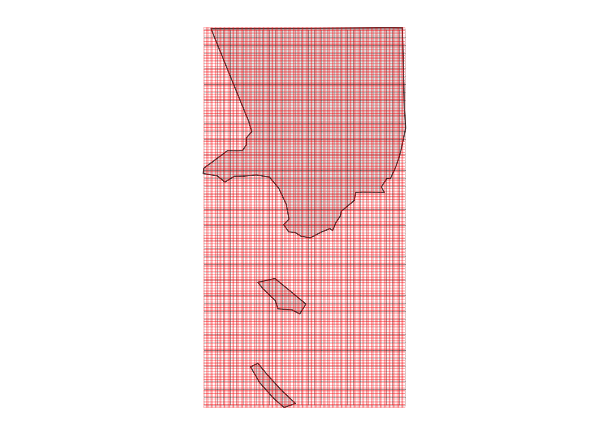
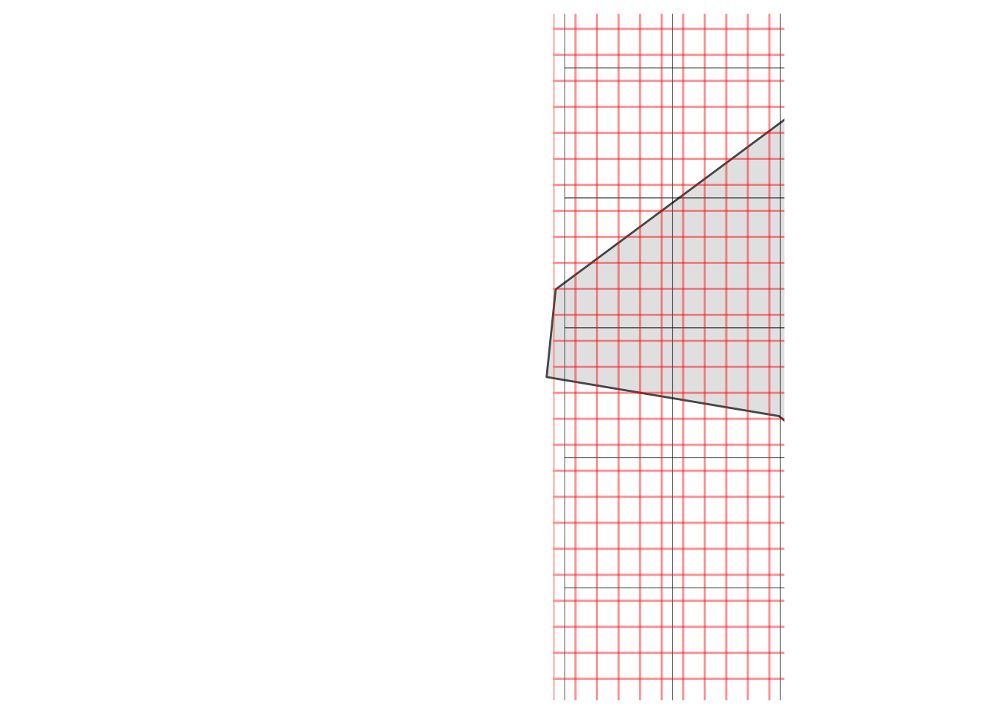
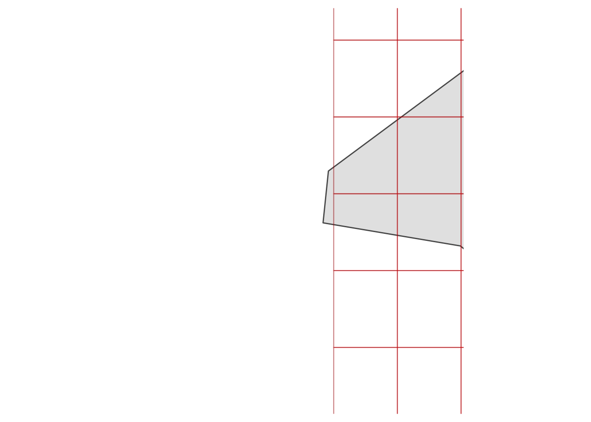
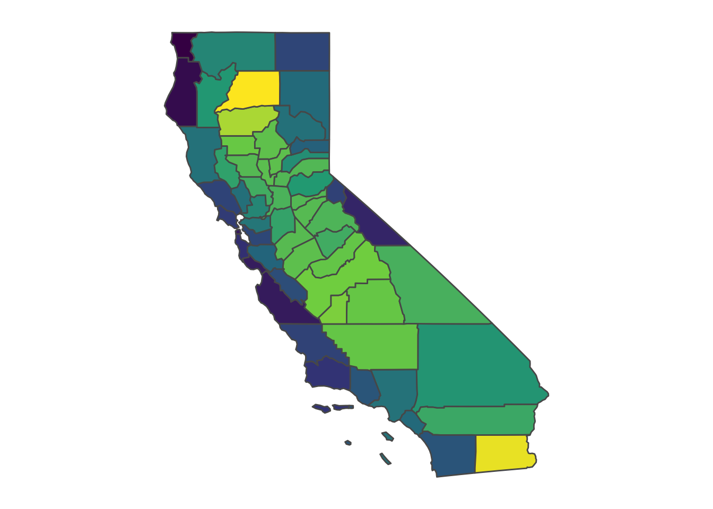

# Load CA counties
CA_counties = tigris::counties(state = "CA", cb = TRUE, resolution = "20m")
# Load PRISM raster
prism_set_dl_dir("./")
get_prism_dailys(type = "tmean", minDate = "1991-07-12", maxDate = "1991-07-12", keepZip = F)
weather_rast = prism_archive_ls()[1] %>% pd_to_file %>% raster
# Note that the prism package has a bunch of convenience functions,
# but in this case we only need one raster
# Load Population raster
# SOURCE: https://sedac.ciesin.columbia.edu/data/set/usgrid-summary-file1-2000/data-download
# Register/Log in, select Census 2000, population for CA, download and unzip
pop_rast = raster("usgrid_data_2000/ascii/capop00.asc")
Note
Updated February 10, 2022 to incorporate prism package.
Much of my work examines how the environment impacts people, often at a national scale. As a result, I often end up using environmental data that is packaged as a raster (i.e., a bunch of grid cells laid over the earth) that I would like to match with adminstrative shapes (e.g., provinces or counties) that are packaged as polygons. Moreover, I often want to do that matching in a way that respects the distribution of population.
To give a more specific example, I often end up (gratefully) using weather data from the PRISM Climate Group at Oregon State, who make rasters of daily and monthly weather data available for the entire United States. The basic idea behind the PRISM approach is that they interpolate weather station data in a sophisticated way that accounts for weather-relevant topographic features, e.g., elevation (details here if that’s your thing). This is usually an improvement over more naive approaches that simply take some sort of distance-weighted average.
So PRISM is really good for generating highly-resolved measurements of weather, and their datasets are packaged as a set of rasters (in fact, there’s even an R package that will help download and manage the PRISM data). This goal of this post is to provide an example for how to get from that raster data to population-weighted county averages, which you can then use in an analysis.
Why should I weight by population?
To see why you should think about weighting by population, let’s take an example from the 1991 cult classic Point Break, which remains one of my favorite movies. If you haven’t seen it, Point Break is a movie about surfing, crime, and the meaning of life, and it stars Johnny Utah (played by Keanu Reeves) and Bodhi (played by Patrick Swayze, RIP).
So, imagine you’re looking down at the County of Los Angeles, much as Johnny and Bodhi do as they parachute down on top of it.

Looking down, Johnny and Bodhi would obviously (obviously!) notice first that the population of Los Angeles County is not distributed evenly across the landscape: LA, especially downtown, is of course densely populated, but many other areas, like the mountains and various beach towns that dot its coastline, have far fewer numbers of people per unit of land area. So from the perspective of observing the weather experienced by average person in LA experiences, an unweighted average isn’t strictly correct. What we really want is some sort of population-weighted average.
Taking population-weighted averages is one of those small things that almost always improves the fit of any statistical model I estimate, since most of the time I’m interested in people’s responses to weather (or controlling for weather), and for that reason it just makes more sense to derive measures that better represent the weather experienced by the actual humans on the ground. It used to be a fairly significant task to compute population-weighted averages, but these days there are tools in R that make it much easier.
In the tutorial that follows, we’ll lean heavily on exactextractr to do the weighting. Our goal will be to generate a population-weighted average of the weather on July 12, 1991 for every county in California. I’m sure I don’t have to tell anyone this, but that’s the date that Point Break was released.
Preliminaries
Our first task is to load a bunch of packages. Besides exactextractr, we’ll load many of the usual suspects.
Next, we want to download a shapefile with our output geography (counties, in this case) and load the PRISM weather data and the population data. The last two are both rasters, and I’ve included their sources in the code. You’ll still need to download and unzip them to your project directory, though.
Visualizing the rasters
Now that we have these loaded, let’s do some visualization of what we’re working with. We’ll focus on just Los Angeles County for now, since that will let us see the (fine) weather grid cells, as well as the even finer population rasters.
# Select LA county
LA_county = CA_counties %>% filter(NAME == "Los Angeles")
# Crop both rasters to LA county and convert to a data.frames (just for plotting)
weather_crop = crop(weather_rast, LA_county)
weather_df = as.data.frame(weather_crop, xy = TRUE)
pop_crop = crop(pop_rast, LA_county)
pop_df = as.data.frame(pop_crop, xy = TRUE)
# Plot shapefile and raster boundaries
ggplot(LA_county) +
geom_sf() +
geom_tile(data = weather_df, aes(x = x, y = y), fill = NA, colour = "black", size = 0.05, alpha = 0.5) +
geom_tile(data = pop_df, aes(x = x, y = y), fill = NA, colour = "red", size = 0.05, alpha = 0.5) +
theme_map()
It’s a little hard to see what’s happening with the grid cells, so let’s zoom into a location at random, like Neptune Net, the restaurant where Johnny Utah first approaches Tyler (played by Lori Petty) about learning to surf.
ggplot(LA_county) +
geom_sf() +
geom_tile(data = weather_df, aes(x = x, y = y), fill = NA, colour = "black") +
geom_tile(data = pop_df, aes(x = x, y = y), fill = NA, colour = alpha("red", 0.25), size = 0.5) +
coord_sf(xlim = c(-118.96250491825595 - 0.1, -118.96250491825595 + 0.1),
ylim = c(34.05315253542454 - 0.1, 34.05315253542454 + 0.1)) +
theme_map()
Zooming in on Neptune’s Net (“Johnny, gimme two!”) demonstrates a little issue: these rasters aren’t perfectly aligned, but they’ll need to be in order to use the population raster as weights when we compute average weather for the county. (Actually, exactextractr could deal with it on its own, but it’s not very good practice.) How can we deal with this? It’s easy: we can resample the population raster to match the weather raster.
Time to resample!
pop_rs = raster::resample(pop_crop, weather_crop)
pop_df2 = as.data.frame(pop_rs, xy = TRUE)
ggplot(LA_county) +
geom_sf() +
geom_tile(data = weather_df, aes(x = x, y = y), fill = NA, colour = "black") +
geom_tile(data = pop_df2, aes(x = x, y = y), fill = NA, colour = alpha("red", 0.25), size = 0.5) +
coord_sf(xlim = c(-118.96250491825595 - 0.1, -118.96250491825595 + 0.1),
ylim = c(34.05315253542454 - 0.1, 34.05315253542454 + 0.1)) +
theme_map()
Now that the rasters are aligned, we can move forward. “Little hand says it’s time to rock and roll.”
Computing population-weighted averages
There’s not much left to do, now that the exact_extract command exists. We can compute both unweighted and weighted averages for LA county (they’re different by more than 1 degree C), and we can compute weighted averages for all the counties in California.
exact_extract(weather_crop, LA_county, fun = "weighted_mean", weights = pop_rs)
# Compare to unweighted mean
exact_extract(weather_crop, LA_county, fun = "mean")
# Now use uncropped (and re-sampled) rasters to generate pop-weighted averages for all CA counties
pop_rast_rs = raster::resample(pop_rast, weather_rast)
CA_counties$tmean_averages = exact_extract(weather_rast, CA_counties, fun = "weighted_mean", weights = pop_rast_rs)
ggplot(CA_counties) +
geom_sf(aes(fill = tmean_averages)) +
scale_fill_viridis_c(name = NULL) +
theme_map() +
theme(legend.position = "none")
And that’s it! Note that you can use exact_extract on other types of raster objects, like RasterStacks or RasterBricks, which allow you to compute averages on more than one layer at once. Happy population-weighting, or in the immortal words of Bodhi…